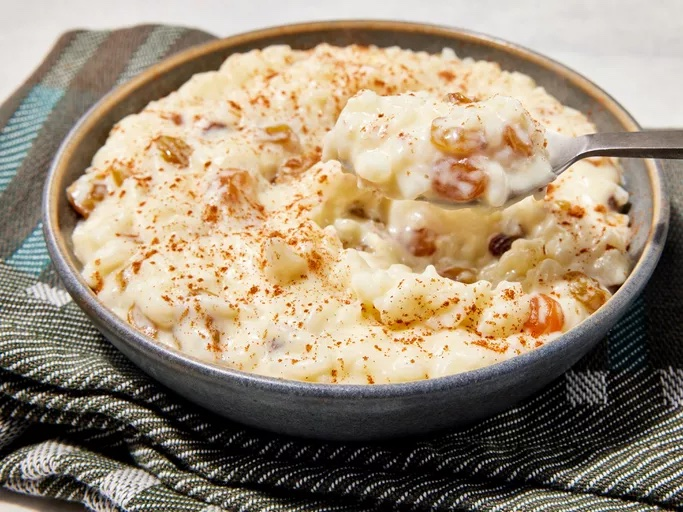

Rice Pudding Recipe

This sweet rice pudding is thick, creamy, and utterly decadent. Made with basic ingredients you likely already have on hand, this rice pudding recipe is the perfect comforting treat.
Ingredients:
- 1.5 cups of cold water
- 0.75 cups of white rice
- 2 cups milk
- 1/3 cup of sugar
- 1 large egg, beaten
- 2/3 cup raisins
- 1 tbsp butter
- 1/2 teaspoon vanilla extract
Instructions:
- Pour water into a saucepan and bring to a boil over medium heat; stir in rice. Reduce heat to low, cover, and simmer until rice is tender and liquid has been absorbed, about 20 minutes.
- Combine cooked rice, 1 ½ cups milk, sugar, and salt in a clean saucepan. Cook over medium heat, stirring often, until thick and creamy, about 15 minutes.
- Stir in remaining 1/2 cup milk, beaten egg, and raisins; cook 2 minutes more, stirring constantly. Remove from heat and stir in butter and vanilla until combined.
Link to Home